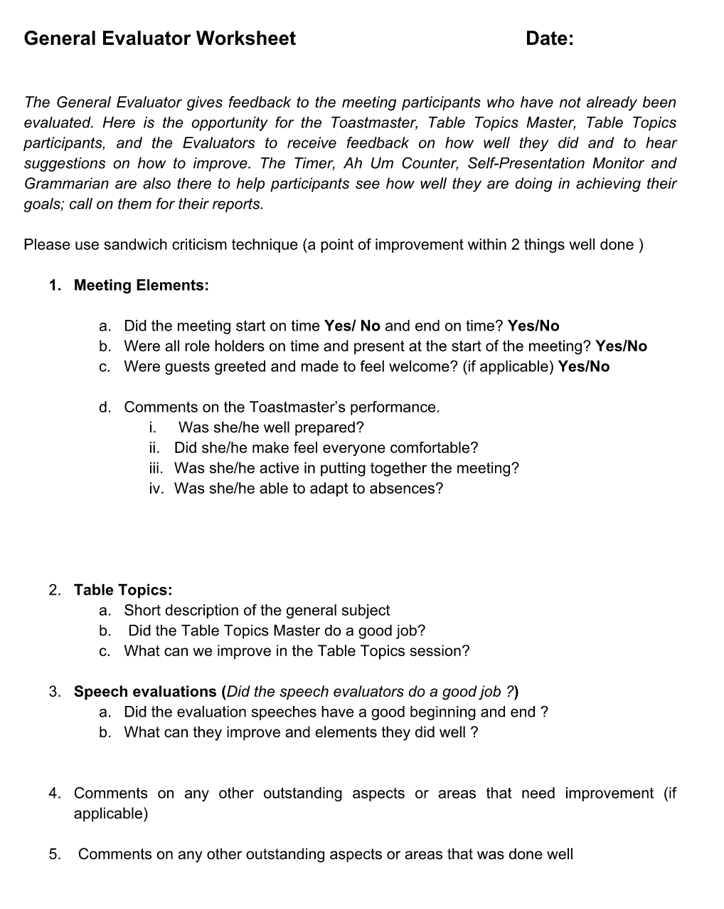

<!-- Main -->
	<div id="main" class="wrapper style1">
		<div class="container">
			<section>
				<p align="center"></p>
				<div class="10u -1u">
					<header class="major">
						<!-- <h2>Blog</h2> -->
						<!-- <span class="byline">Integer sit amet pede vel arcu aliquet pretium</span> -->
					</header>
					<h2>Summary of the Role</h2>
					<ul>
						<li>1.The General Evaluator evaluates everything that takes place during the club meeting.</li>
						<li>2. After all of the evaluation speeches, ask for the time report from the time keeper and vote.</li>
						<li>3. Ask the grammarian, ah-um counter and self-presentation monitor to give their reports</li>
						<li>4. Give your evaluation of the meeting based on the order of who spoke on the agenda.</li><br>
						<li>If you have any questions, feel free to contact the <a href="mailto:arindam.paul@eecs.northwestern.edu">VP Education</a>.</li>
</ul><br>
<h2>Evaluation form</h2>
Download: <a href="geneval.pdf"></a>
	
	<br>
	<h2>Videos</h2>
	<p align="center">
		<iframe height="500"
		src="https://www.youtube.com/embed/toWx_l8-Iew">
		</iframe>
	</p>
<a href="https://www.toastmasters.org/Membership/Club-Meeting-Roles/General-Evaluator"><h2>Resource from Toastmasters International</h2></a>


				</div>
			</section>
		</div>
	</div>
